THREE illustrated pilots only. HUMAN ART APPROVAL PENDING. Elevenremaining rejected NPC artworks are unchanged;their rebuild andPhase3B are LOCKED.
Playable ZIP · QA and retained FAIL/WARNs · Source/tool provenance · Supplemental Phaser clip inspector
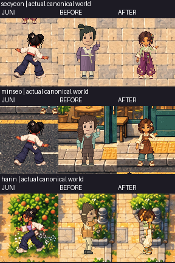
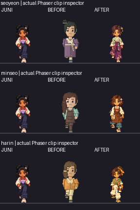
Supplemental neutral atlas inspector,not canonical gameplay. Integer3×review copy
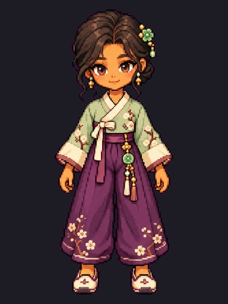
Original master · Original four-view source · 104cell atlas · Authored masks/joints
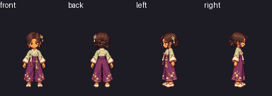
Full native1:1 AFTER with Juni · BEFORE native1:1 · Actual BEFORE replay
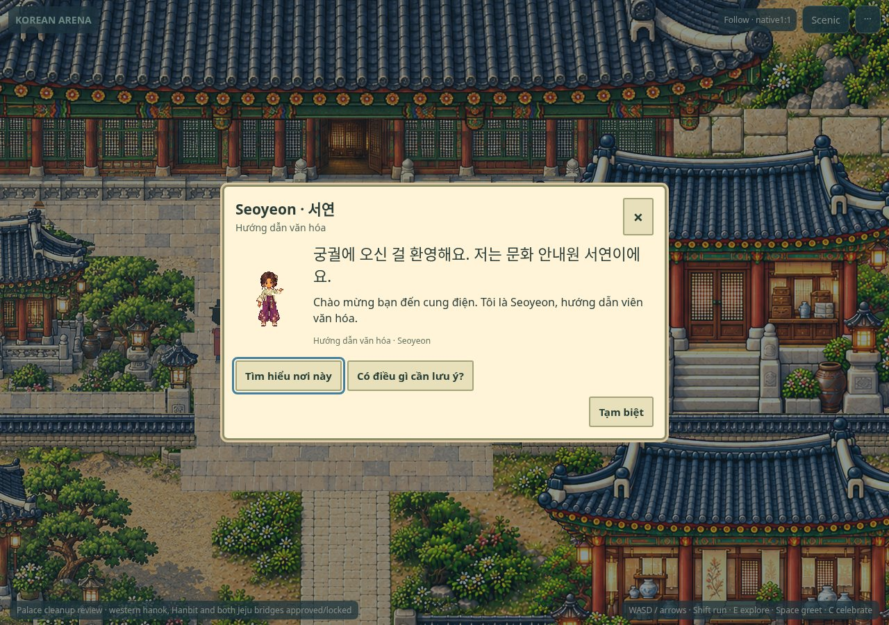
Full8phase source motion,not gameplay: Front · Back · Right · Left
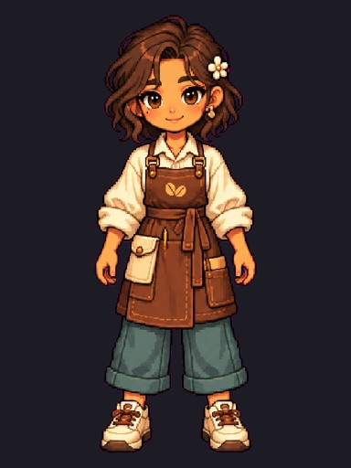
Original master · Original four-view source · 104cell atlas · Authored masks/joints
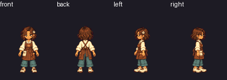
Full native1:1 AFTER with Juni · BEFORE native1:1 · Actual BEFORE replay
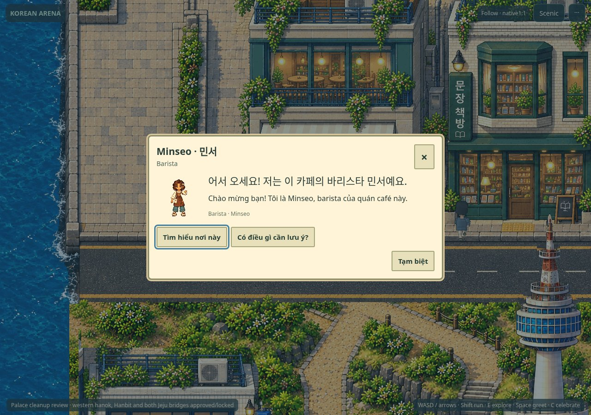
Full8phase source motion,not gameplay: Front · Back · Right · Left
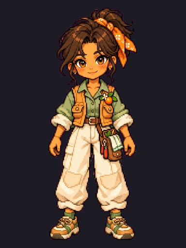
Original master · Original four-view source · 104cell atlas · Authored masks/joints
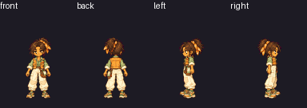
Full native1:1 AFTER with Juni · BEFORE native1:1 · Actual BEFORE replay
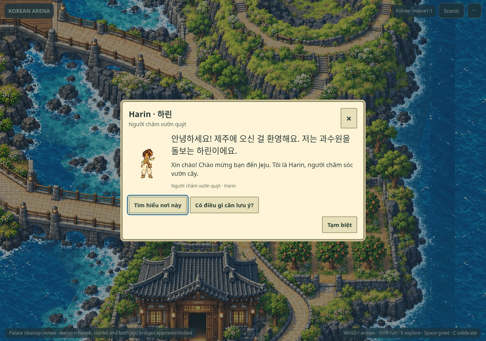
Full8phase source motion,not gameplay: Front · Back · Right · Left
Three complete normalized loops for front/back/right/left of all3pilots. NOT canonical-world gameplay or collision evidence. Frozen short routes remain unchanged.
One existing Jeju foreground ownership edge clips6shoe pixels in one recorded pose;see QA. Third-party heuristic FAIL/WARNs retained. Physicaldevices NOTTESTED. HUMAN ART APPROVAL PENDING;11remaining/Phase3B LOCKED.